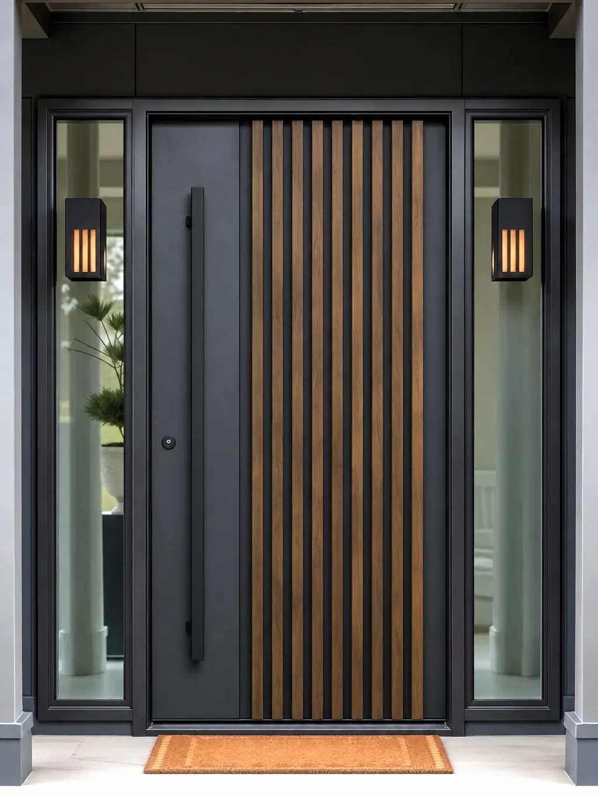

Aluminium-Haustüren
Aluminium-Haustüren bleiben auch bei großen, dunklen Türblättern formstabil und farbecht. Nachfolgend sehen Sie, welche Werte unsere Systeme erreichen. Die konkrete Ausführung stimmen wir in der Beratung mit Ihnen ab.
Die repräsentative Lösung
Aluminium ist bei Haustüren das Material für große, flächenbündige Türblätter in kräftigen Farben. Es verzieht sich nicht, bleibt farbstabil und erlaubt Designs, die in anderen Materialien nicht umsetzbar sind – bodentiefe Glasstreifen, versteckte Griffe, durchgehende Flächen.
- Ud-Wert (je niedriger, desto besser)ab 1,0 W/(m²K), je nach Füllung
- Profilaufbauthermisch getrennt, mit Zentraldichtung
- Farbenüber 200 RAL-Töne, innen und außen unterschiedlich möglich
- Verriegelungautomatische Mehrfachverriegelung
- Einbruchschutzbis Widerstandsklasse RC2
- Formateauch überbreite und überhohe Türblätter

Was für Aluminium-Haustüren spricht
Wo eine Haustür Eindruck machen und zugleich jahrzehntelang funktionieren soll, führt an Aluminium wenig vorbei.
Ein anthrazitfarbenes Türblatt in der Südsonne bleibt gerade. Genau hier stoßen andere Materialien an ihre Grenzen.
Türblatt und Rahmen können auf einer Ebene liegen. Das wirkt ruhig und hochwertig – ein Detail, das sofort auffällt.
Die Tür sichert beim Zuziehen selbsttätig an mehreren Punkten. Niemand muss daran denken, zusätzlich abzuschließen.
Die Pulverbeschichtung hält UV-Strahlung, Frost und Schlagregen stand, ohne nachzudunkeln oder zu kreiden.
Außen der kräftige Farbton zur Fassade, innen ein ruhiger Ton zum Flur – ohne Kompromiss auf einer der beiden Seiten.
Stabile Profile, verdeckt liegende Bänder und geprüfte Beschläge lassen sich bis RC2 ausführen.
Passt Aluminium zu Ihrer Haustür?
Aluminium ist bei Haustüren das unempfindlichste Material – und das teuerste. Liegt Ihre Tür geschützt und soll hell werden, zahlen Sie für Reserven, die Sie nicht benötigen.
Ja, wenn …
- Die Tür liegt ungeschützt, auf der Sonnenseite oder ohne Vordach
- Sie möchten einen dunklen oder kräftigen Farbton
- Eine flächenbündige, moderne Ansicht ist Ihnen wichtig
- Große Formate, Seitenteile oder ein Oberlicht sind geplant
Eher Kunststoff, wenn …
- die Tür geschützt liegt und hell werden soll
- das Budget den Ausschlag gibt
Eher Holz, wenn …
- Sie eine massive, warme Tür möchten
- die Tür zu einem Altbau gehört und geschützt liegt
Unsicher? Dann legen Sie sich nicht vorab fest. Beim Aufmaß vor Ort sehen wir Lage, Maße und Einbausituation – und sagen Ihnen, welches Material sich hier wirklich rechnet.
Die BAFA fördert im Rahmen der Bundesförderung für effiziente Gebäude (BEG) Haustüren mit einem Ud-Wert bis maximal 1,3 W/(m²K) – bei zusätzlicher RC2-Sicherheitsausstattung verschärft sich die Anforderung auf 1,1 W/(m²K). Dieselbe Profiltechnologie erreicht in der Fenstervariante Uw-Werte bis 0,76 W/(m²K) – ein guter Anhaltspunkt für die Dämmleistung, die in diesen Systemen steckt. Wir prüfen für Sie gerne unverbindlich, ob Ihre konkrete Türkonfiguration die Förderkriterien erfüllt – mehr dazu auf unserer Förderung-Seite.
Weitere Systeme auf Anfrage
Oben steht, was wir üblicherweise empfehlen. Je nach Anspruch und Budget realisieren wir für Sie auch:
Sehr gute Dämmwerte zum attraktiveren Preis – solide Zwischenlösung.
Bewährtes Basissystem, günstigster Einstieg in Aluminium.
Was Sie über unsere Aluminium-Haustüren wissen sollten
Er gibt an, wie viel Wärme eine Haustür nach draußen durchlässt – Türblatt und Rahmen zusammengerechnet. Je niedriger die Zahl, desto besser dämmt die Tür. Bei Fenstern heißt derselbe Kennwert Uw. Für die BAFA-Förderung darf eine Haustür höchstens 1,3 W/(m²K) erreichen, bei einbruchhemmenden Türen ab RC2 sind es höchstens 1,1. Welche Konfiguration diese Werte einhält, prüfen wir für Ihr Vorhaben – mehr dazu auf unserer Förderung-Seite.
Entscheidend sind Größe und Anzahl der Elemente, der Glasaufbau, die Farbe (weiß ist günstiger als folierte oder lackierte Ausführungen), die Beschlag- und Sicherheitsausstattung sowie die Einbausituation vor Ort. Pauschalpreise aus dem Internet sagen deshalb wenig aus. Wir messen kostenlos auf und erstellen Ihnen ein verbindliches Festpreisangebot inklusive Montage und Entsorgung der Altelemente.
Serienmäßig kommt eine automatische Mehrfachverriegelung zum Einsatz. Die Tür verriegelt beim Zuziehen selbsttätig an drei Punkten – Sie müssen also nicht daran denken, zusätzlich abzuschließen.
Bei Haustüren vor allem wegen der Formstabilität und der Oberfläche: Aluminium verzieht sich auch bei großen, dunklen Türblättern und starker Sonneneinstrahlung nicht und bleibt über Jahrzehnte farbstabil. Dazu kommen die freie Farbwahl und flächenbündige Designs, die in Kunststoff so nicht umsetzbar sind.
Ja. Für Haustüren verlangt das BAFA einen Ud-Wert von höchstens 1,3 W/(m²K); bei einbruchhemmenden Türen ab Widerstandsklasse RC2 gilt der strengere Wert von 1,1 W/(m²K). Der Zuschuss beträgt 15 % der förderfähigen Kosten und muss vor der Auftragsvergabe beantragt werden. Welche Konfiguration die Kriterien erfüllt, prüfen wir für Sie – mehr dazu auf unserer Förderung-Seite.
Nach dem Aufmaß und der Auftragsbestätigung dauert die Fertigung bei Aluminium-Elementen rund vier Wochen. Den Montagetermin stimmen wir direkt mit Ihnen ab. Bei größeren Objekten planen wir die Montage bauabschnittsweise, damit Ihr Betrieb oder Ihre Mieter möglichst wenig beeinträchtigt werden.
Ja. Rahmen und Türfüllung lassen sich innen und außen in unterschiedlichen Farben ausführen – aus über 200 RAL-Tönen sowie matten, glänzenden, metallic und strukturierten Lacken.
Angebot für Ihre Aluminiumtür anfragen
Ob Einzeltür oder mehrere Einheiten in einem Mehrfamilienhaus – wir beraten Sie unverbindlich zu Aluminium-Haustüren. Beratung und Aufmaß finden bei Ihnen statt, in Isernhagen und der Region Hannover.
Angebot anfragen